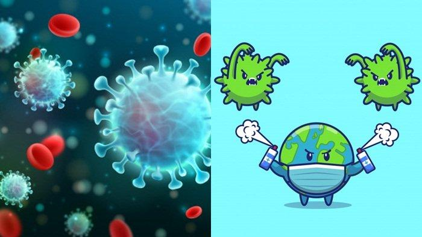

COVID-19
COVID-19 adalah penyakit yang disebabkan oleh virus severe acute respiratory coronavirus 2 (SARS-CoV-2). COVID-19 dapat menyebabkan gangguan pernapasan, mulai dari gejala yang ringan seperti flu, hingga infeksi paru-paru, pneumonia.
COVID-19 (coronavirus disease 2019) adalah jenis penyakit baru yang disebabkan oleh virus dari golongan coronavirus, yaitu SARS-CoV-2 yang juga sering disebut virus Corona.
Kasus pertama penyakit ini terjadi di kota Wuhan, Cina, pada akhir Desember 2019. Setelah itu, COVID-19 menular antarmanusia dengan sangat cepat dan menyebar ke puluhan negara, termasuk Indonesia, hanya dalam beberapa bulan.
Penyebarannya yang cepat membuat beberapa negara menerapkan kebijakan untuk memberlakukan lockdown untuk mencegah penyebaran virus Corona. Di Indonesia, pemerintah menerapkan kebijakan Pembatasan Sosial Berskala Besar (PSBB) untuk menekan penyebaran virus ini.

Gejala Covid-19
Gejala awal infeksi COVID-19 bisa menyerupai gejala flu, yaitu demam, pilek, batuk kering, sakit tenggorokan, dan sakit kepala. Setelah itu, gejala dapat hilang dan sembuh atau malah memberat. Penderita dengan gejala yang berat bisa mengalami demam tinggi, batuk berdahak atau berdarah, sesak napas, dan nyeri dada. Gejala-gejala tersebut di atas muncul ketika tubuh bereaksi melawan virus COVID-19.
Secara umum, ada tiga gejala umum yang bisa menandakan seseorang terinfeksi COVID-19, yaitu:
- Demam (suhu tubuh di atas 38°C)
- Batuk kering
- Sesak napas
Selain gejala di atas, ada beberapa gejala lain yang jarang terjadi, tetapi juga bisa muncul pada infeksi COVID-19, yaitu:
- Mudah lelah
- Nyeri otot
- Nyeri dada
- Sakit tenggorokan
- Sakit kepala
- Mual atau muntah
- Diare
- Pilek atau hidung tersumbat
- Menggigil
- Bersin-bersin
- Hilangnya kemampuan mengecap rasa
- Hilangnya kemampuan mencium bau (anosmia)
Gejala COVID-19 bisa muncul dalam 2 hari sampai 2 minggu setelah seseorang terinfeksi virus penyebabnya. Sebagian pasien COVID-19 pun ada yang mengalami penurunan oksigen tanpa adanya gejala apa pun. Kondisi ini disebut happy hypoxia. Selain itu, beberapa laporan kasus juga menyebutkan bahwa sebagian pasien COVID-19 dapat mengalami ruam kulit.
Pada beberapa penderita, COVID-19 dapat tidak menimbulkan gejala sama sekali. Orang yang sudah terkonfirmasi positif COVID-19 melalui pemeriksaan RT-PCR namun tidak mengalami gejala disebut sebagai kasus konfirmasi asimptomatik. Penderita ini tetap bisa menularkan COVID-19 ke orang lain.